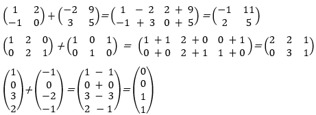
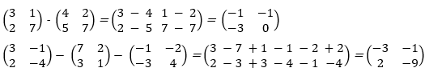
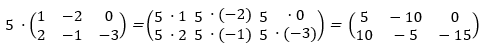
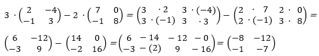
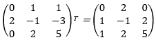
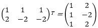

RESPUESTAS
Unidad I Sistema de Numeración
Clasifica los siguientes números como naturales, enteros, racionales o reales
* Naturales √4
* Enteros -3; √4
* Racionales -3; 2,7; 3/7; √4
* Reales Todos
Considera la siguiente numeración y clasifícalos según sean naturales, enteros, racionales, reales
* Naturales - ∛8
* Enteros - ∛8
* Racionales - 3/2; 2/3; 1,5; ∛8
* Reales - Todos
Números complejos
Suma
z + w
Z = 1 + 5 · i
W = 2 - 3 · i
(1 + 5 · i) + (2 - 3 · i) = (1 + 2) + (5 - 3) · i = 3 + 2 · i
Resta
z - w
Z = 3 + 5 · i
W = 1 - 2 · i
(3 + 5 · i) - (1 - 2 · i) = (3 + 1) + (5 – (2)) · i = 4 + 7 · i
Multiplicación
z_1- z_2
(-2 + 7i) (· (-6 -4i))
12 + 8i – 42i – 28i
12 – 34i + 28
40 – 34i
División
z_1/z_2 = (-2+7i)/(-6-4i) · (-6 + 4i)/(-6+4i) = (12-8i-42i+28i)/(((6))^2+(4i)^2 ) = (12-50i-28)/(36-16i) = (-16-50i)/(36+16)=
(-16-50i)/52 = -16/52 -50i/52= -8/26 -25/26i = -4/13-25/26i
Resuelve las siguientes conversiones entre los sistemas de numeración
Binario- Decimal
1011102 – 22
1110002 – 56
Decimal- Binario
14510 – 10010001
50010 – 111110100
Octal – Decimal
428 – 34
3768 – 254
Decimal – Octal
7710 – 115
4410 – 54
Octal – Binario
758 – 111101
1638 – 1110011
Binario – Octal
0012 – 1
1102 – 6
Hexadecimal – Decimal
F416 – 244
D3E16 – 3390
Decimal – Hexadecimal
631910 – 18AF
9210 – 5C
Hexadecimal – Binario
B16 – 11
1C16 – 28
Binario – Hexadecimal
10011112 – 4F
1000012 – 21
Unidad II Algebra
Término común
2x – x3
2x/2=2
x^2/x=x
2x – x2 = x (2 – x)
2x3 – 8x2y2
((2x)^3 y)/((2x)^2 y)=x
((8x)^2 y^2)/((2x)^2 y)=4y
2x3y – 8x2y2 = 2x2y (x – 4y)
Trinomio cuadrado perfecto
x2 + 2x – 15 = 0
(x2 + 2x) – 15 = 0
(x2 + 2x + 1 - 1) – 15 = 0
(x + 1)2 – 1 – 15 = 0
(x + 1)2 = 16
x2 -8x + 11 = 0
(x2 – 8x + 16 - 16) + 11 = 0
(x – 4)2 – 5 = 0
(x – 4)2 = 5
Diferencia de cuadrados
25x4/36 – 16y4/9 = (5x2/6 + 4y2/3) * (5x2/6 – 4y2/3)
√(((25x)^4/36 )) = √(5^2 x^4 )/6^2 = 5x2/6
√(((6y)^4 9)) = √(((4)^2 y^4/3^2))= 4y2/3
16m2 – 9n2 = (4m + 3n) * (4m – 3n)
√((16m)^2 ) = √(4^2 m^2 ) = 4m
√((9n)^2 ) = √(3^2 n^2 ) = 3
Diferencia de cubos
x3 – 27 = x3 – 33
(x - 3) · (x2 + 3x + 9)
8x3 – 27y6 = (2x)3 – (3y2)3
(2x – 3y2) · (4x2 + 6xy2 + 9y4
((27x)^3-1)/(3x-1) = ((3x-1) ·((9x)^2+3x+1))/(3x-1)= (9x)^2+3x+1
Trinomio de la forma x2 + bx + c, ax2 + bx + c
x2 + 2x – 15 = 0
(x2 + 2x) – 15 = 0
(x2 + 2x + 1 – 1) – 15 = 0
(x + 1) ² - 1 - 15 = 0
(x + 1) ² = 16
x – y2 – 8y = 0
x = y² - 8y
x = y² - 8y + 16 - 16
x = (y - 4) ² - 16
x2 – 10x + 1
x2 – 10x + 25 – 25 +1
(x – 5)2 - 5
3x2 + 19x – 14
3 (3x2) + 3 (19x) – 3 (14) = (3x2) + 19 (3x) – 42
(3x)2 + 19 (3x) 42 = (3x + 2) (3x -2)
((3x+2) (3x-2))/3 = (x +7) (3x – 2)
Unidad III Ecuaciones e Inecuaciones
Ecuaciones lineales
X + 3 = 10
X + 3 – 3 = 10 – 3
x =7
5x = 8x – 15
5x – 8x = 8x – 8x – 15
-3x = - 15
(-3x) (-1) (- 15x) (-1) = 3x = 15
X = 15
Signos de agrupación
5x + {-2x + (-x + 6)} = 18 – {- (7x + 6) – 3x – 24)}
5x – {- 2x - x + 16} = 18 – { -7x + 6 – 3x – 24}
5x – 2x – x + 6 = 18 + 7x + 6 – 3x – 24
5x – 2x – x – 7x – 3x = 18 + 6 – 24 – 6
-8x = - 6
x = -6/-8
X – (2x + 1) = 8 – 3x + 3)
X – 2x – 1 = 8 – 3x – 3
X – 2x – 3x = 8 – 3 -1
2x = 6
x = 6/2
x = 3
Fraccionarias
3x/2 + 1/4 + 2 = 3x/4- x/3
6 (3x) + 3(1) + 12(2) = 3(3x) -4(x)
18 x + 3 + 24 = 9x – 4x
18x – 9x + 4x =
24 – 3 =
13x = -21
X = -27/13
Resuelve las siguientes ecuaciones
Método de sustitución
4 + x = 2y
2x – y = 1
4 + x = 2y
x = 2y -4
2x – y = 1
2 · (2y · 4) –y = 1
4y – 8 – y = 1
4y – 8 – y = 1
3y – 8 = 1
3y = 9
y = 9/3 = 3
x = 2y – 4
x = 2 · 3 – 4
x = 6 – 4 = 2
x= 2, y = 3
Método de reducción
x – y = 2
2x + y = 19
+(x - y = 15 / 2x + y = 15 )/(3x = 21)
3x = 21
x = 21/3
x = 7
x – y = 2
7 – y = 2
y = 7 – 2
y = 5
x = 7, y = 5
Método de igualación
x – y = 5
x + 2y = -1
x – y = 5
x + 2y = -1
x = 5 + y
x = - 1 – 2y
5 + y = -1 – 2y
2y + y = -1 – 5
3y = - 6
y = - 6/3
y = -2
x = 5 + y
x = 5 – 2
x = 3
x = 3, y = -2
Ecuaciones cuadráticas; completa ax2 + bx + c, mixta ax2 + bx = 0, pura ax2 + c = 0
3x2 – 5x + 2 = 0
x_(1,2) = (-(-5)±√(((-5))^2-4(3)(2)))/(2(3)) = (5±√(25-24))/6
x_1 = (5+√1)/6 = (5+1)/6 = 1
x_1= 1
x_2 = (5-√1)/6 = (5-1)/6 = 4/6 = 2/3
x_2= 2/3
8x + 5 = 36x2
x_(1,2) = (-(-8)±√(((-8))^2-4(36)(-5)))/(2(36)) = (8±√(64-720))/72
x_1 = (8+√748)/72 = (8+28)/72 = 36/72 = 1/2
x_1= 1/2
x_2 = (8-√748)/72 = (8-28)/72 = 20/72 = -5/18
x_2= -5/18
x2 - 25 = 0
x^2-25
X = ±√25
x_(1 )= +5
x_(2 )= -5
4x2 – 16 = 0
X2 = 4
x = ±√4
x_(1 )= +2
x_(2 )= -2
Unidad IV Algebra Lineal
Suma matrices

Resta

Producto de una matriz rectangular por un escalar

Producto por un escalar y suma de dos matrices cuadradas de dimensión 2

Transpuesta de una matriz cuadrada de dimensión 3

Transpuesta de una matriz rectangular (2 x 3)
